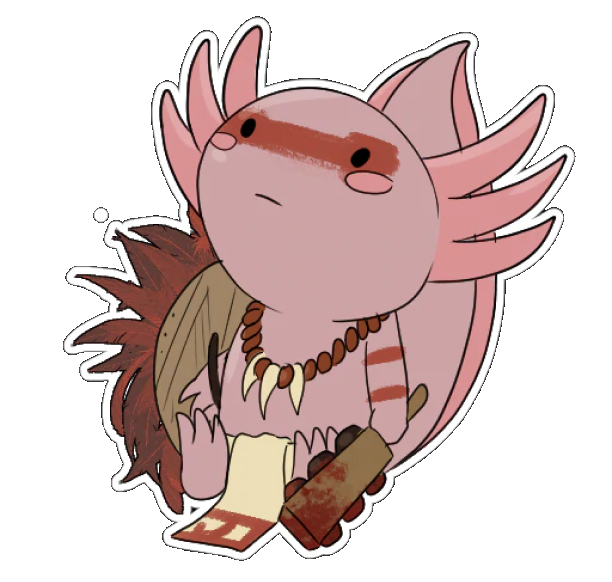

<div class="container bg-dark text-white py-3 my-5">
  <div class="row">
    <div class="col-4">
      <figure class="figure">
        
      </figure>
    </div>
    <div class="col-8">
      <h2 class="text-center">Oceandex</h2>
      <h3 class="title text-center">Sobre nosotros</h3>
      <p class="text-justify"> Somos un grupo de jóvenes desarrolladores web que preocupados por las especies marinas en peligro 
          de extinción, desarrollamos un sitio web a través de las tecnologías como Git, GitHub, HTML, CSS, 
          Boostrap, Angular, JavaScrip, TypeScrip, nodeJS, PostgreSQL, Figma.
      </p>
      <p class="text-justify">
          En el cual puedes informarte sobre las especies en peligro de extinción, conocer lugares de apoyo, 
          reportar especies encontradas en peligro, así como realizar donaciones que son entregadas a casas 
          de apoyo para el cuidado y preservación de las especies marinas.
      </p>
      <h3 class="text-center">Valores</h3>
      <ul class="list-inline text-center">
          <li class="list-inline-item">Respeto</li>
          <li class="list-inline-item">Creatividad</li>
          <li class="list-inline-item">Compromiso</li>
          <li class="list-inline-item">Solidaridad</li>
          <li class="list-inline-item">Empatía</li>
          <li class="list-inline-item">Compromiso Social</li>
          <li class="list-inline-item">Lealtad</li>
          <li class="list-inline-item">Amistad</li>
      </ul>
    </div>
  </div>
</div>